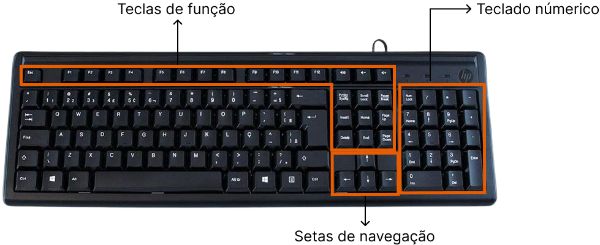

Aprendendo a utilizar o teclado
Sabemos que a tecnologia pode parecer desafiadora, mas com paciência e prática, qualquer um pode dominá-la. Hoje, vamos explorar os diferentes modelos de teclado, como utilizar as letras, o Shift e Caps Lock, apagar letras, usar o Enter e adicionar acentos. Vamos lá?
Modelos de Teclado: 100%, 70% e 60%
Existem alguns modelos de teclado diferente nos dias de hoje, são eles:
- Teclado 100%: Este é o teclado completo, contendo todas as teclas, incluindo o teclado numérico à direita.
- Teclado 70%: Este modelo é mais compacto e geralmente não possui o teclado numérico, mas ainda mantém as teclas de função (F1, F2, etc.) e as setas de navegação.
- Teclado 60%: Este é o mais compacto, eliminando as teclas de função, setas de navegação e teclado numérico. É perfeito para quem precisa de um teclado portátil e minimalista.
Este é um exemplo de um teclado 100%, mostrando o teclado numérico, teclas de função e setas navegação.
Além disso, há uma diferença entre os teclados brasileiros e os internacionais. Os teclados brasileiros têm a tecla "Ç" e uma configuração especial para acentos, enquanto os internacionais podem ter estilos diferentes e não incluem a tecla "Ç".
Obs: existem diferentes tipos de marcas de teclado, cabe a quem está usando escolher o seu próprio.
Utilização das Letras
Cada quadradinho com uma letra, número ou simbolo corresponde a uma tecla. Para digitar uma letra, basta pressionar a tecla correspondente. É importante familiarizar-se com a localização das teclas, o que se tornará mais intuitivo com a prática.
Utilização do Shift e Caps Lock
- Shift: Esta tecla é usada para digitar letras maiúsculas ou os símbolos superiores nas teclas que possuem dois caracteres. Para usá-la, segure a tecla Shift e, ao mesmo tempo, pressione a letra ou símbolo desejado.
- Caps Lock: Ao ativar a tecla Caps Lock, todas as letras serão digitadas em maiúsculas até que a tecla seja pressionada novamente para desativá-la. Uma luz no teclado geralmente indica quando o Caps Lock está ativado.
A principal diferença entre Shift e Caps Lock é que o Shift é uma tecla que devemos segurar para utiliza-lá, enquanto o Caps Lock nos permite ativar e desativar a tecla.
Como Apagar Letras
Para apagar letras, utilize a tecla Backspace . Pressioná-la apagará o caractere à esquerda do cursor (a linha piscante que mostra onde o próximo caractere será digitado)
Utilização do Enter
A tecla Enter é usada para confirmar comandos (exemplo: quando termina de escrever um formulário ou de escrever algo que irá pesquisar na internet), enviar mensagens ou passar para a próxima linha em um documento de texto.
Como Adicionar Acentos
Adicionar acentos em teclados brasileiros é simples:
- Acento Agudo (´): Pressione a tecla do acento e, em seguida, a letra que deseja acentuar (ex: á, é, í, ó, ú).
- Acento Grave (`): Segure o shift e pressione a tecla do acento e, em seguida, a letra que deseja acentuar (ex: à).
- Circunflexo (^): Segure o shift e pressione a tecla do acento e, em seguida, a letra que deseja acentuar (ex: â, ê, î, ô, û).
- Til (~): Pressione a tecla do acento e, em seguida, a letra que deseja acentuar (ex: ã, õ).
Conclusão
Espero que este guia tenha ajudado a esclarecer as principais funções e usos do teclado. Lembre-se, a prática é a chave para melhorar a sua habilidade com o teclado. Não se desanime se parecer complicado no início; com o tempo, você se sentirá cada vez mais confortável. Continue acompanhando nosso blog para mais dicas e tutoriais. Boa digitação!